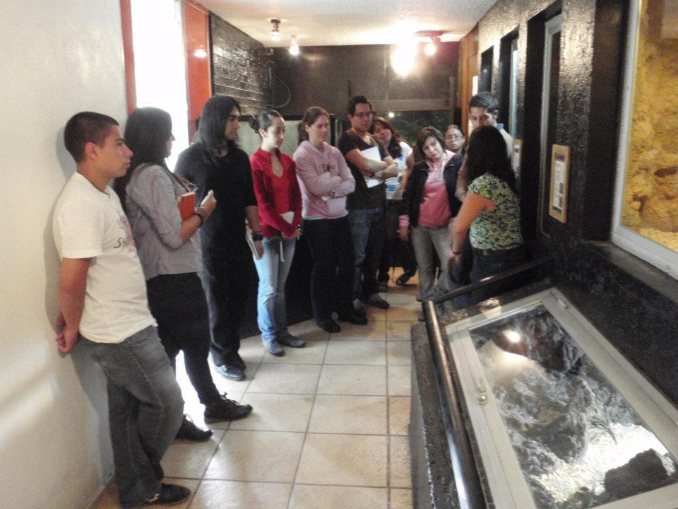

CG
Dr. Carlos Gutiérrez Olvera
MVZ · UNAM FMVZ
Profesor de tiempo completo del Departamento de Nutrición Animal y Bioquímica, FMVZ UNAM.
Diplomados híbridos en rescate, rehabilitación, anestesia y conducta de fauna silvestre — impartidos por los autores del tema. Centro Latinoamericano de Estudios en Ciencias Biológicas y de la Salud Animal
Explora los diplomados →No formamos espectadores. Formamos a quienes intervienen cuando un animal silvestre depende de una decisión.
 02/
Manejo Conductual de FaunaDiplomado internacional · próxima edición
Más información →
02/
Manejo Conductual de FaunaDiplomado internacional · próxima edición
Más información →
 03/
Ortopedia de Aves SilvestresDiplomado · clínica y cirugía · próxima edición
Más información →
03/
Ortopedia de Aves SilvestresDiplomado · clínica y cirugía · próxima edición
Más información →
 04/
Contención Química y Anestesia de FaunaDiplomado clínico · próxima edición
Más información →
04/
Contención Química y Anestesia de FaunaDiplomado clínico · próxima edición
Más información →
 05/
Nutrición de Fauna Silvestre en CautiverioDiplomado internacional · próxima edición
Más información →
05/
Nutrición de Fauna Silvestre en CautiverioDiplomado internacional · próxima edición
Más información →

Curso: Lenguaje y Comunicación de los Gatos — 100% en línea, a tu ritmo. 12 horas · 5 meses de acceso · constancia con valor curricular · avalado por CONCERVET.
Ver el curso · $1,400 MXN →Cada módulo lo imparte el especialista que investiga y opera esa área. No presentadores genéricos.
Clases grabadas, material descargable y sesiones en vivo. Estudias a tu ritmo sin perder la comunidad LATAM.
Casos clínicos y sesiones presenciales con fauna bajo cuidado humano. La teoría se prueba en campo.
Te llevamos al pago seguro en celebios.online · apartas tu cupo en minutos.
Una comunidad de especialistas en toda Latinoamérica.

[Nombre]MVZ · Centro de rescate · [País]